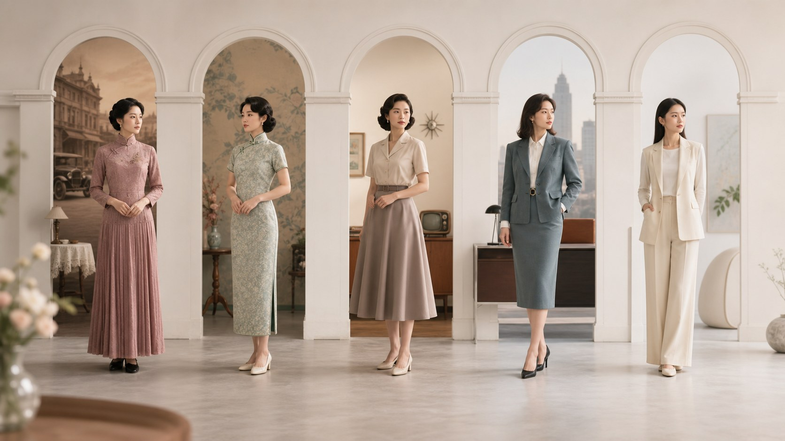

基础与美学
审美趋势的变迁｜"好看"是时代给出的参考答案
胸部审美从来没有固定答案，它跟着时代、地域和文化一起流动。本文讲清流行如何变迁，以及为什么别被某一时的一套标准绑架。

很多人以为，"好看"是一个客观存在的标准。但若把目光拉长，就会发现它更像是一阵风，每个年代往不同方向吹。审美从来不是铁律，而是某个时期、某个地方给出的一个参考答案，会随着时间、社会和人们的生活方式一起改变。
回看不同年代的照片，你会看到明显差异。有的时期偏爱饱满丰盈，似乎丰满就是美；有的阶段转向自然紧致，很多人追求线条利落；还有的时期，人们更看重匀称、健康、舒展的整体感，外形是否"标准"反而是次要的。同一副身形，在不同年代的遭遇可能完全不同。
这种变化背后，是文化、经济、媒体和消费方式在悄悄推动。一个时代推崇什么，往往和它推崇的生活、身份与价值观有关。比如崇尚活力时，挺拔紧致更受青睐；讲究柔和时，自然曲线又被重新欣赏。流行没有对错，它只是在为主流的生活方式代言。
地域和文化的差异也同样明显。在有的文化里，匀称与自然更被看重；在另一些地方，饱满与曲线被赋予更多意义。同样一副身形，被不同文化品评时，得到的评价可能差别很大。这恰恰说明，所谓"更好的美"，从来不是全世界统一的口径。
那为什么我们还是会忍不住拿自己对照？因为在媒体、广告和社交平台的放大下，某一套标准被反复推到眼前，渐渐占满了整个视野，让人误以为那就是"应该"的样子。流行是一时的热闹，不代表它适合所有人，更不代表你的身体出了错。
更值得留意的是，今天的审美正在变得更包容。无论自然的、匀称的、带点辨识度的还是健康舒展的，各有各的美；越来越多的人不再拿单一模板衡量自己，而是更看重整体的健康、舒展和从容。真正应该警惕的，不是"我是否符合某种标准"，而是"我是不是被一个标准绑架了太久"。
所以，看待审美趋势的变迁，最好的方式不是把它当作准则，而是当作一种观察。了解流行如何变化，不是为了追赶下一阵风，而是为了明白：美的答案在你手里，由你来做主。身体是你的，标准是你定的。
本文用于公众健康教育，不构成医疗建议，不替代面诊。医美决策请与具备资质的医师面诊后作出。